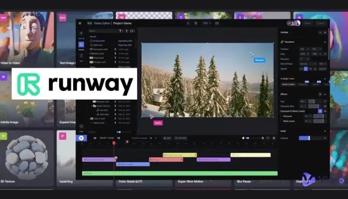

Galería Runway


Runway es una plataforma de inteligencia artificial para crear, editar y transformar videos, imágenes y contenido multimedia mediante texto e instrucciones visuales.
Ir a Runway OficialGeneración audiovisual
Edición creativa
Multimedia

Crea videos a partir de texto, imágenes o instrucciones.
Permite transformar escenas, clips y contenido multimedia.
Apoya la creación de efectos, transiciones y estilos.
Sirve para proyectos de video, presentaciones y contenido digital.